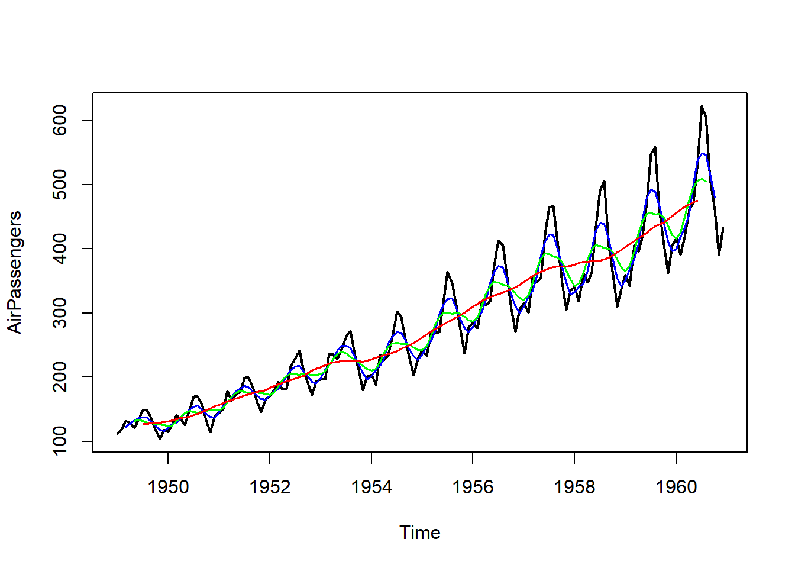
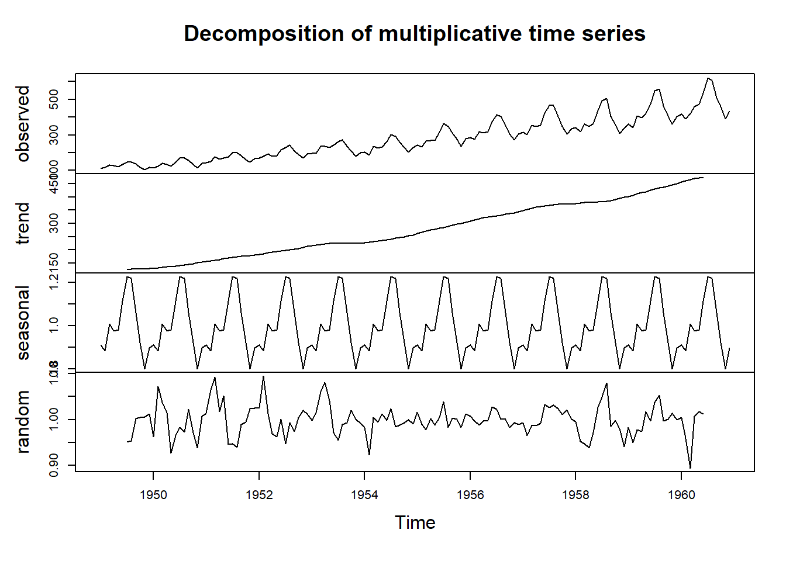
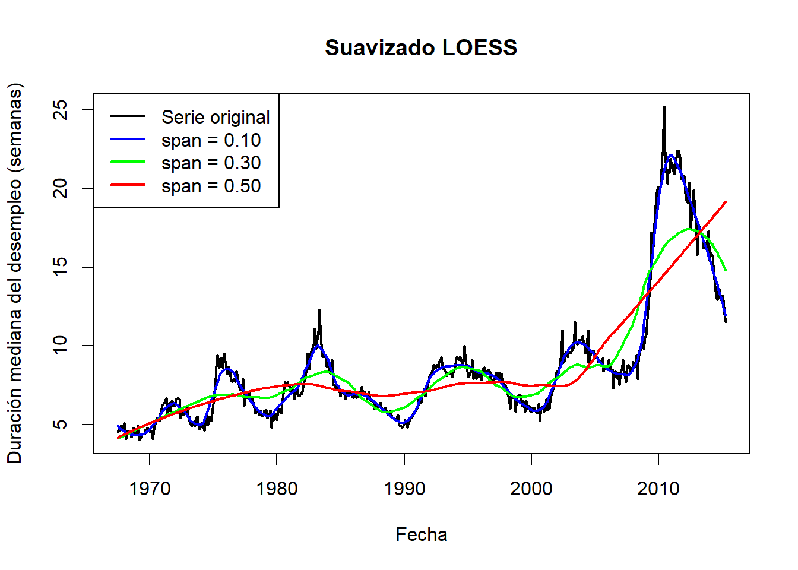
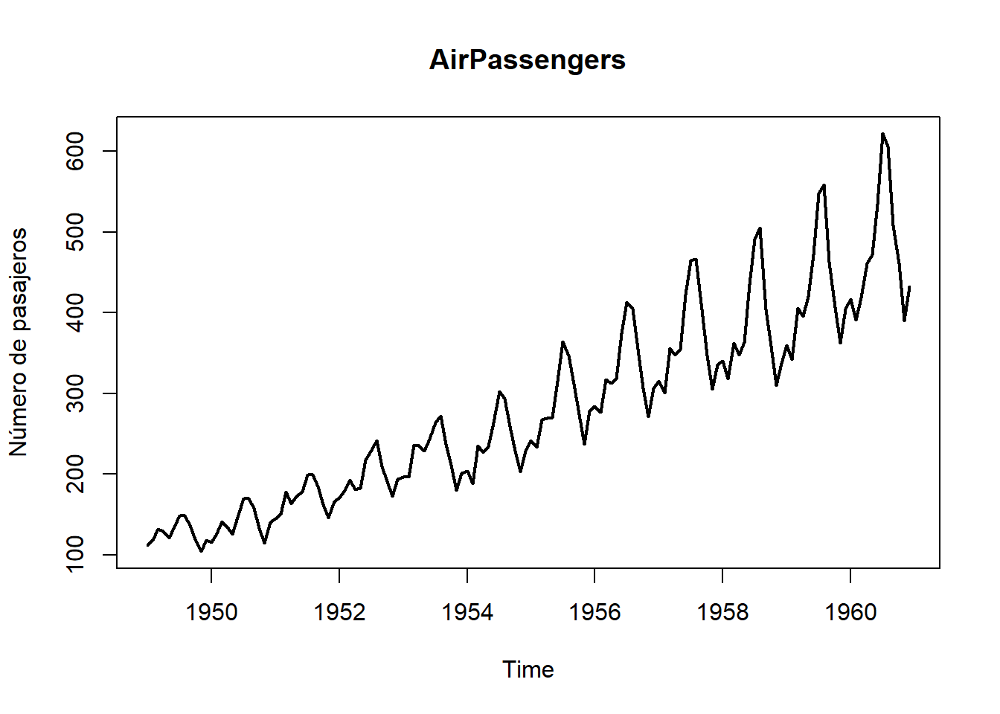
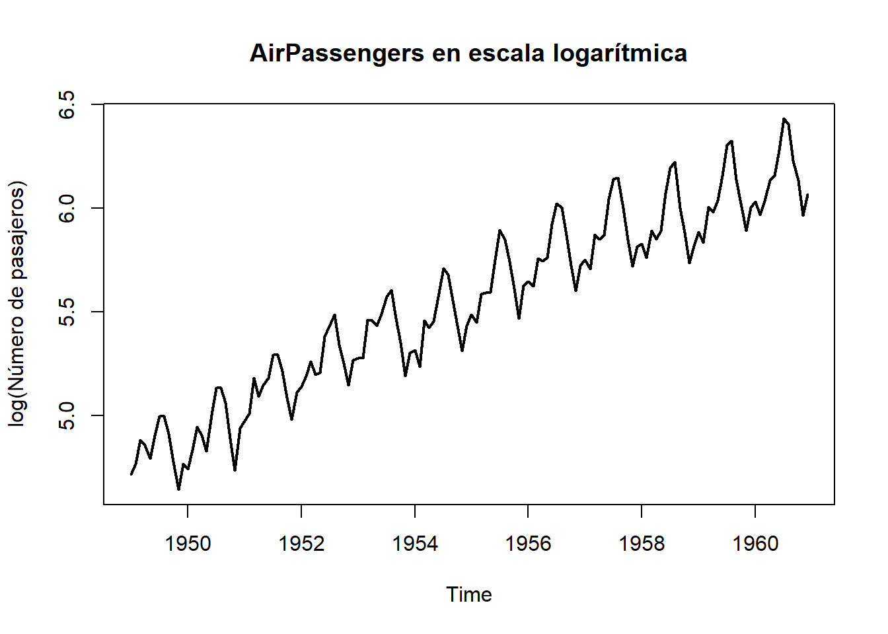

El estudio de series temporales es fundamental para el proceso de predicción (Forecasting), que consiste en anticipar eventos futuros basándose en datos históricos y patrones identificables. Esta disciplina es esencial en diversos campos, desde la economía hasta la ingeniería, y su aplicación es vital para la toma de decisiones informadas en el ámbito empresarial y gubernamental.
¿Qué se puede predecir?
La predicción se utiliza en múltiples situaciones de la vida cotidiana y la industria, como son la gestión de inventarios, la planificación de la producción, la gestión energética o la asignación de personal. La capacidad de predecir con precisión depende de varios factores, entre ellos la comprensión de las causas subyacentes, la disponibilidad de datos históricos, la consistencia del comportamiento pasado y futuro, y el impacto de las predicciones en los propios eventos. Por ejemplo, las predicciones a corto plazo de la demanda eléctrica residencial suelen ser precisas debido a la estabilidad de los factores que la afectan y la abundancia de datos históricos relevantes.
Diferencia entre predicciones, objetivos y planificación
Es crucial diferenciar entre predicciones, objetivos y planificación. Predecir implica anticipar el futuro con la mayor precisión posible mediante el análisis de datos históricos y el conocimiento de eventos futuros. Los objetivos son metas específicas que deben alinearse con las predicciones y servir como guía para la planificación. La planificación involucra diseñar estrategias y acciones basadas en las predicciones para alcanzar los objetivos establecidos.
Determinación de qué predecir
Decidir qué predecir es un paso crucial. Puede involucrar observaciones individuales o datos agregados. Es importante definir el horizonte de predicción, que puede ser a corto plazo (una hora, o unos días), a medio plazo (por ejemplo, un mes) o a largo plazo (por ejemplo, un año). Además, se debe determinar la frecuencia de las predicciones, que puede ser diaria, semanal, mensual o anual, según las necesidades de los usuarios de las predicciones. La recolección y organización de datos relevantes y precisos es esencial para asegurar la calidad de las predicciones.
Datos y métodos de predicción
Los métodos cuantitativos de predicción son útiles cuando hay datos numéricos disponibles y se espera que los patrones pasados continúen en el futuro. Los datos de series temporales, como las ventas trimestrales o la demanda horaria de electricidad, son fundamentales en estos análisis. La descomposición de datos permite estudiar tendencias y patrones estacionales. Entre los métodos más utilizados se encuentran el análisis clásico de series, el suavizamiento exponencial y los modelos ARIMA, efectivos para capturar y predecir patrones en los datos históricos. Los modelos explicativos, que emplean variables predictoras, y los modelos mixtos, que combinan características de varios enfoques, pueden mejorar la precisión y la utilidad de las predicciones.
Pasos básicos en Forecasting
Las etapas a tener en cuenta en un problema de predicciones son:
Definición del problema: Entender el uso y los usuarios de las predicciones para asegurar que se adapten a sus necesidades específicas.
Recolección de información: Obtener datos estadísticos relevantes y utilizar la experiencia de expertos en el campo.
Análisis preliminar: Graficar y analizar datos para identificar patrones, tendencias y estacionalidad, lo cual ayuda en la selección del modelo de predicción adecuado.
Elección y ajuste de modelos: Seleccionar y ajustar el método de predicción más apropiado basado en los datos disponibles y la situación específica.
Uso de las predicciones: Aplicar los resultados en la planificación y toma de decisiones, alineando las acciones con las expectativas futuras y los objetivos de la organización o empresa.
5.2 Definición de serie temporal. Gráficos.
Una de las técnica más importante para hacer inferencias sobre el futuro con base en lo ocurrido en el pasado, es el análisis de series de tiempo.
Dada una serie temporal, nuestros objetivos principales serán: describir el comportamiento de la serie, investigar el mecanismo generador de la serie temporal y buscar posibles patrones temporales que permitan sobrepasar la incertidumbre del futuro.
Se suele hablar del estudio clásico o descriptivo de las series temporales para referirse a la metodología que se ha venido empleando desde la segunda mitad del siglo XIX. A pesar de sus limitaciones, los métodos clásicos se siguen usando por su sencillez y simplificación. En la década de los 60 se plantearon métodos de previsión alternativos a los clásicos que suplen varias de sus limitaciones, como son los métodos de alisado exponencial, y a principios de los 70 aparece un nuevo enfoque, debido a los estadísticos Box y Jenkins, para los modelos univariantes de series temporales.
Definición 5.1 Llamamos serie temporal a un conjunto de mediciones de cierto fenómeno o experimento registradas secuencialmente en el tiempo. Estas observaciones suelen denotarse por: \[
\left\{ x_{t_1},x_{t_2},...,x_{t_n}\right\} \quad \text{con }%
\{t_1<t_2<...<t_n\}=\mathbb{T}\subset \Bbb{R}.
\] donde \(x_{t_i}\) representa el valor, en el instante \(t_i\), de una variable aleatoria que evoluciona con el tiempo.
NoneObservación
Teniendo en cuenta la definición anterior, una serie temporal puede verse también como una realización (o trayectoria) de un proceso estocástico \((X_t)_{t\in\mathbb{T}}\).
En muchas áreas de conocimiento, las observaciones de interés son obtenidas en instantes sucesivos del tiempo. Por ejemplo, cada hora, cada día, datos mensuales, trimestrales, semestrales o bien registradas por algún aparato de medición en forma continua.
De una manera sencilla, podemos decir que si \(\mathbb{T}\subset\Bbb{Z}\) es un conjunto contable, se dice que la serie es de tiempo discreto, mientras que si \(T\subset\Bbb{R}\) es un intervalo real, se dice que la serie es de tiempo continuo.
Cuando \(t_{i+1}-t_i=k\), para todo \(i=1,...,n-1\), se dice que la serie es equiespaciada; en caso contrario será no equiespaciada.
En adelante, trabajaremos por comodidad con series de tiempo equiespaciadas. Por tanto, se denotarán de la siguiente forma: \[\left\{ x_{t_1},x_{t_2},...,x_{t_n}\right\} =\left\{ x_1,x_2,...,x_n\right\}. \]
El primer paso en el análisis de cualquier serie de tiempo consiste en representarla gráficamente (gráfico temporal). En la representación gráfica de las series temporales se utilizan los ejes cartesianos. En el eje de abscisas se representa el tiempo \(t,\) y en el eje de ordenadas, los valores de la magnitud observada \(x_t\). Se obtiene así una nube de puntos \((t,x_t)\) que, unidos por segmentos, proporcionan una visión dinámica de la evolución de la variable a lo largo del tiempo.
Veamos algunos ejemplos de series de datos incluidos en R. La primera, LakeHuron, contiene las medidas anuales del nivel del lago Huron (en pies), en el tramo 1875-1972. Observamos una tendencia decreciente que parece estabilizarse en el tramo final. La segunda serie de datos, AirPassengers, contiene el los viajeros mensuales en aerolíneas internacionales, en el tramo 1949-1960. Observamos un patrón periódico que se repite a lo largo de la serie, así como tendencia creciente. La tercera, EuStockMarkets, contiene los precios diarios al cierre de 4 índices stock europeos (DAX, SMI, CAC y FTSE), en el tramo 1991-1998. Observamos que las cuatro series presentan un patrón de comportamiento similar, con tendencia creciente y picos de crecimiento en los mismos tramos temporales.
a) Detectar outliers (datos atípicos): se refiere a puntos de la serie que se escapan de lo “normal”. Un outlier puede corresponderse con un error de medición, o bien con un valor real del fenómeno, el cual a su vez puede tener o no influencia destacada en el modelo propuesto. Conviene identificar los outliers para determinar si deben eliminarse, reemplazarse por otro valor, o bien mantenerlos en el análisis.
b) Detectar estacionalidad: la variación estacional representa un movimiento periódico de la serie de tiempo. Cada estación puede corresponder con un trimestre, un mes, un día, etc.
c) Detectar tendencias: la tendencia representa el comportamiento predominante de la serie una vez eliminada la estacionalidad. Esta puede ser definida vagamente como la curva maestra que muestra el cambio de la media a lo largo del tiempo.
5.3 Medidas para evaluación de predicciones
En esta sección introduciremos conceptos y alguna notación referidos al contexto de predicción con series temporales.
En primer lugar, debemos destacar que para que tenga sentido la realización de predicciones se supondrá que los datos recopilados a lo largo del tiempo se han tomado siempre en las mismas magnitudes y que la serie presenta cierta estabilidad en la estructura del fenómeno estudiado.
En el análisis clásico, las predicciones futuras se realizan teniendo en cuenta únicamente el valor de la serie para instantes pasados. Si diponemos de \(T\) observaciones de la serie en estudio, la información disponible viene dada por: \[x_1,x_2,...,x_T. \] Dada esta información, la predicción de la variable en estudio en el instante siguiente \(T+1\) se denotará por: \[\hat{x}_{T+1|T}. \] y en un instante posterior cualquiera \(T+m\), con \(m>0\), será: \[\hat{x}_{T+m|T}. \]
Así, el error de predicción vendrá dado por la diferencia entre el valor observado de la serie y la predicción: \[e_{T+m|T}=x_{T+m|T}-\hat{x}_{T+m|T}.\]
Comentar que, al igual que sucede en muchos procesos de inferencia, se pueden realizar predicciones puntuales y predicciones por intervalos de confianza para las observaciones futuras. En la mayoría de los casos, nos limitaremos a proporcionar estimaciones puntuales.
Para poder comparar diversos procedimientos de predicción, es decir, para responder a la pregunta ¿qué método es mejor para predecir esta serie?, necesitamos disponer de algún criterio que nos permita evaluar las predicciones realizadas.
Como primer paso, podemos comentar la existencia de algunos métodos extremadamente básicos, denominados métodos ingenuos, que sirven de referencia en la comparación de predicciones. Es decir, las predicciones que se obtienen con cualquier procedimiento suelen compararse con las predicciones que se obtendrían con algún método ingenuo. Si el método ingenuo proporciona mejores predicciones (menores errores de predicción), esto será indicativo de que el método usado no es el adecuado y conviene probar con otro.
Dos ejemplos de métodos ingenuos que se utilizan como referencia son:
Método ingenuo I: La predicción para el próximo instante es igual a la observación actual (último valor observado). \[
\hat{x}_{t+1|t}=x_t.
\]
Método ingenuo II: La predicción para el próximo instante es igual a la observación actual más el último incremento observado. \[
\hat{x}_{t+1|t}=x_t+(x_t-x_{t-1}).
\]
Como segunda opción para medir la capacidad predictiva de un modelo, se suelen calcular las siguientes medidas. Si se dispone de \(N\) observaciones \[
x_{T+m|T},\qquad m=1,2,\ldots,N
\] y se han realizado predicciones desde el instante \(T\), \[
\hat{x}_{T+m|T},\qquad m=1,2,\ldots,N,
\] con errores \[
e_{T+m|T}=x_{T+m|T}-\hat{x}_{T+m|T},\qquad m=1,2,\ldots,N,
\] las medidas son:
RMSE (la raíz cuadrada del error cuadrático medio): \[
RMSE=\sqrt{\frac{\sum\limits_{m=1}^N e_{T+m|T}^2}{N}},
\]
MAE (el error absoluto medio): \[
MAE=\frac{\sum\limits_{m=1}^T\left| e_{T+m|T}\right| }{N}
\]
Ambas medidas se expresan en las unidades de la variable. El RMSE penaliza especialmente los errores de gran magnitud por el uso de cuadrados.
Valores menores indican mejor precisión según la medida elegida cuando se comparan los mismos datos, escala y horizontes. Para comparar los métodos de predicción deben utilizarse predicciones genuinas sobre observaciones no usadas para calcularlas.
Conviene indicar la existencia de otras medidas para evaluar predicciones, además de las vistas aquí.
Por último destacaremos que para que un modelo predictivo sea adecuado no basta con que los errores de predicción sean pequeños (valores pequeños de RMSE y de MAE), sino que además pretendemos describir completamente el comportamiento sistemático de la serie (la parte determinista), de manera que la parte que queda sin describir (los errores de predicción) deberían ser un ruido blanco.
5.4 Componentes de una serie temporal y esquemas de integración
El principal fin del estudio de series temporales es realizar predicciones. Un punto muy importante a tener en cuenta en este contexto es la cantidad de información contenida en una serie temporal.
Por ejemplo, podemos considerar la serie temporal correspondiente a la hora de salida del sol (medida todos los días durante 10 años). Con la serie de observaciones pasadas podemos realizar una buena predicción para días futuros, es decir, la serie contiene mucha información relevante para predecir el futuro. Consideremos por otra parte la serie temporal correspondiente al número premiado del sorteo de la lotería (medida todos los sábados durante 20 años). En este caso las observaciones pasadas no nos permiten realizar una buena predicción del fenómeno en el futuro, es decir, la serie contiene poca información relevante para predecir el futuro.
Podríamos decir que la primera serie es prácticamente determinista mientras que la segunda es totalmente aleatoria. En general, las series de tiempo contienen una parte determinista (permiten realizar predicciones) y otra parte aleatoria (perturbación impredecible).
En el Análisis Clásico se supone que una serie temporal, \(\{x_t\}_{t=1,...,n},\) se puede descomponer en todas o algunas de las siguientes componentes:
Componente de Tendencia \((T_t)\)
Componente de Ciclo \((C_t)\)
Componente de Estacionalidad \((S_t)\)
Componente Irregular \((I_t)\)
Veamos a continuación el significado de cada una de las componentes, aunque resulta complicado dar una definición exacta de cada una de ellas.
a)Componente de Tendencia (Trend): Es la componente que describe movimientos persistentes del nivel de la serie, es decir, la curva maestra de evolución del fenómeno en estudio. Las variaciones de la tendencia de una serie pueden deberse a diversos motivos.
b)Componente de Ciclo (Cycle): El factor cíclico refleja movimientos oscilatorios por encima y por debajo de la tendencia a largo plazo. La duración de un ciclo se suele medir desde un pico al siguiente pico de la serie suavizada (o desde un valle al siguiente valle). Se entiende que el periodo de cada ciclo es siempre superior al año. A veces se confunde con la componente estacional. La diferencia principal es que las fluctuaciones de los ciclos no tienen frecuencia fija, y suelen asociarse a aspectos económicos, mientras que las fluctuaciones de la componente estacional tienen frecuencia fija y se asocian con aspectos del calendario.
Observación: En general, las componentes de tendencia y ciclo son muy difíciles de separar, de manera que se suelen fusionar en una única componente denominada Tendencia-Ciclo. En adelante, nosotros trabajaremos con ambas componentes fusionadas y usaremos la notación \(T_t\) y hablaremos de Tendencia para referirnos a la componente Tendencia-Ciclo.
c)Componente de Estacionalidad (Seasonal): La componente estacional recoge el comportamiento periódico (repetitivo) de la serie. Las razones de la estacionalidad suelen ser de tipo físico-natural (tiempo meteorológico, ciclos biológicos, etc) y de tipo institucional (vacaciones, horarios comerciales, etc.). Es decir, aparece debido al efecto del calendario.
En general, la estacionalidad se refiere a las oscilaciones de una serie temporal que se completan dentro de un año y que se repiten en años sucesivos. Por tanto, el periodo de esta componente suele ser menor o igual a un año. Por ejemplo, si disponemos de datos mensuales podemos tener estacionalidad con periodo 12 meses (un año), si disponemos de datos trimestrales podemos tener estacionalidad con periodo 4 trimestres (un año). Si disponemos de datos diarios, podemos tener estacionalidad con periodo 7 días (una semana), si disponemos de datos cada hora, podemos tener estacionalidad con periodo 24 horas (un día), etc. El periodo de la componente estacional hace referencia al número de datos que conforman la parte repetitiva de la serie.
En Análisis Clásico, se supone que la que componente estacional (patrón periódico) se repite de forma fija a lo largo de toda la serie. Por tanto, si el periodo es \(L\), diremos que la componente estacional tiene \(L\)estaciones que podemos denotar por \(\{h_1, h_2, ..., h_L \}\) y buscamos estimar un valor correspondiente a cada estación.
Por ejemplo, si se trata de datos mensuales, probablemente observaremos en la serie temporal un patrón repetitivo cada año (cada 12 datos). Tendremos entonces que el periodo es \(L=12\), cada mes del año sería una estación (\(h_1=enero\), \(h_2=febrero\), …\(h_{12}=diciembre\)) y por tanto estimaremos un valor que se repetirá para todos los eneros, un valor que se repetirá para todos los febreros, …, un valor que se repetirá para todos los diciembres. Si se trata de datos diarios (por ejemplo, ingresos por ventas de unos grandes almacenes), observaremos en la serie temporal un patrón repetitivo cada semana (cada 7 datos). Tendremos entonces que el periodo es \(L=7\), cada día sería una estación (\(h_1=lunes\), \(h_2=martes\),…, \(h_7=domingo\)) y por tanto estimaremos un valor que se repetirá para todos los lunes, un valor que se repetirá para todos los martes, …, un valor que se repetirá para todos los domingos.
d)Componente Irregular (Reminder): Esta componente viene dada por las variaciones de la serie que no están recogidas en las demás componentes. La idea es que recoja la perturbación aleatoria pura de la serie, es decir, la parte impredecible de la serie. Lo ideal es que se corresponda con un ruido blanco, de manera que toda la parte determinista de la serie quede recogida en las componentes Tendencia-Ciclo y Estacional.
Como ya hemos indicado, en el análisis clásico se supone que el valor que toma la serie \(\{x_t\}_t\) en cada instante se puede expresar como una función del valor correspondientes a sus componentes en dicho instante: \[x_t=f\left( T_t,S_t,I_t\right) ,\] donde \(T_t\) representa la Tendencia-Ciclo. Conviene señalar que en una serie temporal no tienen por qué estar presentes todas las componentes.
Los esquemas más utilizados para describir la forma en que las componentes se integran para dar lugar a la serie son el esquema aditivo y el multiplicativo.
Esquema aditivo: Según este esquema, el valor de la serie en cualquier instante se obtiene como suma de los valores correspondientes a sus componentes en dicho instante: \[
\boxed{x_t=T_t+S_t+I_t}
\]
Esquema multiplicativo: Según este esquema, el valor de la serie en cualquier instante se obtiene como producto de los valores correspondientes a sus componentes en dicho instante: \[
\boxed{x_t=T_t\times S_t\times I_t}
\]
Cuando todos los factores son positivos, es posible transformar el esquema multiblicativo en aditivo tomando logaritmos naturales \[
\log x_t=\log T_t + \log S_t + \log I_t.
\]
Aunque por su sencillez los esquemas más utilizados son los dos anteriores, también suelen utilizarse los esquemas mixtos, donde algunas componentes se integran de forma multiplicativa y otras de forma aditiva. Un ejemplo de esquema mixto sería: \[x_t=T_t\times S_t+I_t\]
¿Esquema aditivo o multiplicativo? Para determinar si las componentes de la serie se combinan de forma aditiva o multiplicativa, se pueden usar varias herramientas:
Inspección visual: En un esquema aditivo, la representación gráfica de la serie mostrará una componente estacional aproximadamente estable en todo momento, independientemente de los valores que tome la tendencia (nivel de la serie). Sin embargo, en un esquema multiplicativo, la componente estacional se amplifica cuando la serie se mueve en niveles más altos.
Gráfico de desviaciones típicas frente a medias: Este gráfico consiste en calcular, para cada tramo periódico (por ejemplo, un año), tanto la desviación típica como la media de los valores de la serie. En un esquema aditivo, las desviaciones típicas se mantienen aproximadamente constantes sea cual sea el valor de la media, mientras que en el esquema multiplicativo, las desviaciones típicas aumentan cuando crece la media.
A continuación mostramos un ejemplo de esquema multiplicativo (figura de la izquierda) y un esquema aditivo (figura de la derecha).
5.5 Diferenciación de una serie temporal y medias móviles
La representación gráfica de la serie temporal nos puede ayudar a decidir el tipo de tendencia de la serie, pero a veces no es tan sencillo. Un método que permite determinar el tipo de tendencia de una serie y a su vez eliminarla consiste en tomar diferencias.
Diferenciación de una serie
Definición 5.2 Dada una serie temporal \(\{x_t\}_{t=1,...,n}\) , se define su diferencia de primer orden como la serie que resulta de restar a cada observación, la observación anterior: \[
\Delta x_t=x_t-x_{t-1}
\]
De manera análoga, se puede definir la diferencia de orden 2 de la serie como: \[\Delta ^2x_t=\Delta \left( x_t-x_{t-1}\right) =\left( x_t-x_{t-1}\right)
-\left( x_{t-1}-x_{t-2}\right) =x_t-2x_{t-1}+x_{t-2}\] así como la diferencia de orden\(k\), en general.
NoneObservación
Al tomar diferencias de orden uno, la serie resultante tiene un dato menos (se pierde el primer dato). Si se toman diferencias de orden dos, la serie resultante tiene dos datos menos (se pierden los dos primeros). En general, al tomar diferencias de orden \(k\), la serie resultante tiene \(k\) datos menos (se pierden los \(k\) primeros datos).
Si la tendencia es de tipo lineal, \[
x_t=T_t+I_t=b_0+b_1\cdot t + I_t.
\] ésta se puede eliminar tomando diferencias de orden uno: \[
\begin{aligned}
x_t &=b_0+b_1\cdot t+ I_t\\
&\Rightarrow \Delta x_t=x_t-x_{t-1}=\left( b_0+b_1\cdot t+I
_t\right) -\left( b_0+b_1\cdot (t-1)+I_{t-1}\right) \\
&\Rightarrow \Delta x_t=b_1+\left( I_t- I_{t-1}\right)
=b_1+\tilde{I}_t
\end{aligned}
\] es decir, la serie obtenida al tomar diferencias de orden uno es una constante (\(b_1\)) más una componente irregular (\(\tilde{I}_t\)).
Lo ideal es que \(\tilde{I}_t\) sea un ruido blanco gaussiano.
En general, si la tendencia es de tipo polinómico de orden \(k\), ésta se puede eliminar tomando diferencias de orden \(k.\)
Veamos un ejemplo del efecto de tomar diferencias de orden 1 sobre la serie de precios del índice DAX y sobre la serie de pasajeros:
Si la tendencia es de tipo exponencial, \[
x_t=T_t\cdot I_t=e^{b_0+b_1\cdot t} \cdot I_t,
\] ésta se puede eliminar tomando diferencias en el logaritmo de la serie: \[
\begin{aligned}
x_t &=e^{b_0+b_1\cdot t}\cdot I_t \Rightarrow \log
x_t=b_0+b_1\cdot t+ \log I_t \\
&\Rightarrow \Delta \log (x_t)=\log (x_t)-\log (x_{t-1})=b_1+\widetilde{%
I}_t.
\end{aligned}
\] De nuevo, lo ideal es que \(\tilde{I}_t\) sea un ruido blanco gaussiano.
Por otra parte, la diferencia de logaritmos coincide con el logaritmo del cociente, así que: \[
\Rightarrow \Delta \log (x_t)=\log (x_t)-\log (x_{t-1})=\log \left( \frac{x_t}{%
x_{t-1}}\right)
\] y usando el desarrollo de Taylor para el logaritmo se tiene que: \[
\Delta \log (x_t)=\log \left( \frac{x_t}{x_{t-1}}\right) \simeq \frac{%
x_t-x_{t-1}}{x_{t-1}}\quad \text{(Tasa de variación relativa)}
\]
Por tanto, si la tendencia es de tipo exponencial, las tasas de variación relativa oscilarán alrededor de un valor constante.
Medias Móviles
Otro método para ayudar a identificar la tendencia de una serie (análisis descriptivo de la serie), son las medias móviles, aunque también puede usarse para realizar predicciones y para eliminar la componente estacional de una serie.
Este método consiste en realizar, para cada instante de tiempo \(t\), la media de unas cuantas observaciones. Necesitamos determinar cuántas observaciones se usarán para el cálculo de la media móvil (longitud u orden de la media móvil).
Las medias móviles eliminan las irregularidades de la serie observada, es decir, se produce un suavizado de la serie eliminando o atenuando el efecto de la componente irregular, consiguiendo así identificar la trayectoria que sigue la tendencia. Además, cuanto mayor sea el orden de la media móvil, más se suaviza la serie. El problema de determinar el orden de la media móvil no es tan inmediato porque, si es demasiado pequeño, puede que no elimine las irregularidades, y si es demasiado grande, podemos perder información sobre cambios de la serie (en el caso extremo tendríamos siempre una tendencia constante).
Un aspecto importante de este método frente al ajuste de la tendencia por mínimos cuadrados es que en este caso el análisis de la tendencia se realiza desde un enfoque local, es decir, la trayectoria de la tendencia se obtiene localmente utilizando algunas observaciones de la serie (no todas). En este sentido, este método permitirá obtener mejores predicciones a corto plazo que si ajustamos la tendencia por mínimos cuadrados. Por contra, no dispondremos de un modelo matemático que nos permita describir la serie y realizar predicciones a largo plazo.
Podemos distinguir dos tipos: medias móviles centradas y medias móviles asimétricas.
Las medias móviles centradas revisten mayor interés, se suelen utilizar para describir la tendencia de la serie de forma más flexible y adecuada que usando mínimos cuadrados.
Definición 5.3 Dada una serie temporal \(\{x_t\}_{t=1,...,n}\), se define su media móvil centrada de orden\((2p+1)\) como la serie obtenida mediante la siguiente expresión: \[
MM(2p+1)_t=\frac{x_{t-p}+x_{t-p+1}+...+x_t+...+x_{t+p-1}+x_{t+p}}{2p+1}
\] es decir, en cada instante \(t\), se calcula la media usando las \(p\) observaciones anteriores, las \(p\) observaciones posteriores y la propia observación en el instante \(t.\)
Si el orden de la media móvil es par, entonces debemos realizar dos veces medias móviles para conseguir que sea centrada.
Definición 5.4 Dada una serie temporal \(\{x_t\}_{t=1,...,n}\), se define su media móvil centrada de orden\((2p)\) como la serie obtenida mediante la siguiente expresión: \[
MM(2p)_t=\frac{MM(2p)_{t-0.5}+MM(2p)_{t+0.5}}2
\] donde: \[
MM(2p)_{t-0.5}=\frac{x_{t-p}+...+x_{t-1}+x_t+...+x_{t+p-1}}{2p}
\] y \[
MM(2p)_{t+0.5}=\frac{x_{t-p+1}+...+x_t+x_{t+1}+...+x_{t+p}}{2p}
\]
NoneObservación
La serie obtenida por médias móviles centradas (ya sea de orden impar \(2p+1\) o de orden par \(2p\)) pierde los \(p\) primeros valores y los \(p\) últimos. Es decir, la serie suavizada tendrá \(2p\) datos menos que la original, así que no conviene tomar el orden de la media móvil demasiado alto porque se perderían muchos datos.
La siguiente figura muestra cómo aumenta el suavizado de una serie (eliminación de las irregularidades) conforme aumentamos el orden de la media móvil (en negro, la serie original; en azul, medias móviles de orden 5; en verde, medias móviles de orden 8; en rojo, medias móviles de orden 12):
library(forecast)ts.plot(AirPassengers, lwd =2)lines(ma(AirPassengers, order =5), col ="blue", lwd =1.5)lines(ma(AirPassengers, order =8, centre =TRUE), col ="green", lwd =1.5)lines(ma(AirPassengers, order =12), col ="red", lwd =1.5)

Definición 5.5 Dada una serie temporal \(\{x_t\}_{t=1,...,n}\), la media móvil asimétrica de orden\(p\) se define de la siguiente forma: \[
MMA(p)_t=\frac{x_{t-p+1}+...+x_{t-1}+x_t}p
\] es decir, consiste en realizar la media aritmética de las \(p\) últimas observaciones de la serie.
Esta variante de las medias móviles se puede usar para realizar predicciones en un modelo con tendencia aproximadamente constante localmente. Suele ser más adecuado para las predicciones a corto plazo que un ajuste por mínimos cuadrados, debido a su enfoque local para la estimación de la tendencia. Es decir, si disponemos de las observaciones hasta el instante \(T\), la predicción para el instante siguiente viene dada por la media de las \(p\) últimas observaciones: \[\widehat{x}_{T+1}=\frac{x_{T-p+1}+...+x_{T-1}+x_T}p\]
En esta expresión se aprecia que todas las observaciones que intervienen en la media tienen el mismo peso. En el tema siguiente veremos que los métodos de alisado exponencial suelen dar mejores resultados porque se les da más peso a las observaciones más recientes que a las más antiguas.
5.6 Descomposición clásica de series temporales
El objetivo de esta sección es mostrar las técnicas clásicas para descomponer una serie temporal en sus 3 componentes fundamentales (Tendencia-Ciclo, Estacional e Irregular). Para ello, es necesario determinar previamente si el esquema de integración de dichas componentes se considera aditivo, o multiplicativo.
Comenzaremos con el enfoque clásico para extraer las componentes en un esquema aditivo, conocido como el método de la diferencia a la media móvil.
5.6.1 Método de la diferencia a la media móvil
El método de la diferencia a la media móvil es el método que se usa para desestacionalizar una serie que presenta un esquema aditivo: \[x_t=T_t+S_t+I_t \]
Consideremos una serie temporal con el esquema anterior, presentando componente estacional, y llamemos \(L\) al periodo de la componente estacional. En muchas ocasiones \(L\) será un número par, por ejemplo \(L=12\) para datos mensuales, \(L=4\,\)para datos trimestrales, etc.
La idea fundamental para intentar eliminar la componentes estacional consiste en tomar medias móviles de orden \(L\,\)(periodo de la componente estacional). Realizamos los siguientes pasos:
Calcular la media móvil centrada de orden\(L\)para la serie y determinar la componente Tendencia-Ciclo.
Calculando la media móvil centrada de orden \(L\), donde \(L\) representa el periodo de la componente estacional, se consigue eliminar en gran parte el efecto de la componente estacional así como de la componente irregular.
Por tanto, la serie obtenida por medias móviles servirá como estimación de la componente Tendencia-Ciclo (\(T_t\)): \[
T_t = MM(L)_t
\]
Recordar que si \(L\) es par, la media móvil centrada se obtiene realizando el promedio de dos series de medias móviles. Además, si \(L\) es par, la serie obtenida por medias móviles tiene \(L\) datos menos que la serie original. Por ejemplo, si la serie original se refiere a datos mensuales, tendremos un dato menos por cada mes. Y si \(L\) es impar, la serie obtenida por medias móviles tiene \(L-1\) datos menos que la serie original.
Obtener los índices brutos de variación estacional (IBVE).
Como el esquema es aditivo: \[
x_t=T_t+S_t+I_t
\] una estimación de las componentes Estacional e Irregular conjuntamente viene dada por: \[
\widehat{S_t+I_t}=x_t-T_t=x_t-MM(L)_t
\] es decir, hay que restar a la serie original la serie obtenida mediante medias móviles de orden \(L\) (de ahí el nombre de método de la diferencia a la media móvil).
Cada uno de los valores obtenidos mediante la diferencia anterior se denomina índice bruto de variación estacional en el instante \(t:\)% \[
(IBVE)_t=\widehat{S_t+I_t}=x_t-MM(L)_t
\] donde el calificativo de “bruto” se debe a que el índice estacional está contaminado por la componente irregular.
Obtener los índices de variación estacional no normalizados (IVENN).
Con el fin de eliminar la componente irregular de los índices anteriores, calcularemos la media de los índices para cada estación. Si disponemos de información correspondiente a \(K\) periodos completos y un total de \(N\) observaciones, entonces se cumple que: \[
N=L\cdot K
\] Por ejemplo, pensemos en datos mensuales y un total de 5 años completos, es decir, \(12*5=60\) datos. Como ya hemos indicado, al realizar medias móviles se pierden \(L\) datos (uno por cada estación, si \(L\) es par), de manera que para cada estación dispondríamos de exactamente \(K-1\) datos (en lugar de \(K\)).
Llamaremos índice de variación estacional no normalizado al promedio de los IBVE para cada estación \(h\): \[
(IVENN)_h=\frac{\sum_{\{t:h(t)=h\}}(IBVE)_t}{K-1}\quad h=h_1,h_2,...,h_L
\] donde \(\{t:h(t)=h\}\) denota el conjunto de instantes de tiempo que se corresponden con la estación \(h\). Si \(K\) no es muy pequeño, con el promedio conseguimos atenuar enormemente el efecto de la componente irregular, de manera que estos nuevos índices contienen información de la componente estacional pero no de la componente irregular.
Podemos poner una expresión más general para obtener los índices de variación estacional no normalizados, que contemple la posibilidad de que la serie tenga periodos incompletos o bien que \(L\) sea impar, en cuyo caso, el número de datos \((IBVE)_t\) disponible para cada estación puede ser diferente. Denotemos por \(K_h\) al número de datos \((IBVE)_t\) disponible para cada estación \(h\), entonces:
Obtener los índices de variación estacional normalizados (IVE) y determinar la componente Estacional
Si una serie no tiene componente estacional, en un modelo aditivo se tendría que \(S_t\equiv 0.\) Por otra parte, es razonable suponer que la componente estacional no debe afectar al nivel de la serie, de manera que en el modelo aditivo la media de la componente estacional debería ser 0.
Por tanto, definimos los índices de variación estacional normalizados para cada estación \(h\) como: \[
(IVE)_h=(IVENN)_h-\frac{\sum_{h \in \{h_1,...,h_L \}}(IVENN)_h}L
\] aunque existen otras forma de normalizar los índices de variación estacional.
Estos índices suponen una estimación de la componente estacional de la serie para cada estación \(h.\) Es decir, en este paso determinamos la componente estacional para cada instante de tiempo \(t\), haciéndola coincidir con el índice de variación estacional para la estación, \(h(t)\), correspondiente al instante \(t\): \[
S_t=(IVE)_{h(t)}
\]
Desestacionalizar la serie.
En el modelo aditivo, la desestacionalización de la serie se consigue restando a la serie original los índices de variación estacional: \[
D_t=x_t-S_t=x_t-(IVE)_{h(t)}\quad \mbox{(serie
desestacionalizada)}.
\]
En algunos softwares como SPSS, una vez desestacionalizada la serie, se extrae una nueva componente Tendencia-Ciclo, suavizando la serie desestacionalizada. Por ejemplo, aplicando dos veces medias móviles de orden 3. Pero no es el caso del sofware R, así que esta etapa podría obviarse.
Determinar la componente Irregular.
Una vez extraidas la componente Estacional (\(S_t\)) y la Tendencia-Ciclo (\(T_t\)), la componente Irregular (\(I_t\)) se obtiene de forma inmediata mediante:
\[
I_t = x_t - T_t - S_t
\]
La situación ideal sería que dicha componente irregular se comportara como un ruido blanco gaussiano.
A continuación, mostramos el enfoque clásico para extraer las componentes de una serie temporal si el esquema es multiplicativo.
5.6.2 Método de la razón a la media móvil
El método de la razón a la media móvil es el método que se usa para desestacionalizar una serie que presenta un esquema multiplicativo:
\[x_t=T_t\times S_t\times I_t \]
Los pasos para desestacionalizar la serie y extraer las componentes son similares al caso aditivo, pero realizando cocientes en lugar de diferencias:
Calcular la media móvil centrada de orden\(L\)para la serie y determinar la componente Tendencia-Ciclo.
\[
T_t=MM(L)_t
\]
Obtener los índices brutos de variación estacional (IBVE).
Como el esquema es multiplicativo, una estimación de las componentes Estacional e Irregular conjuntamente viene dada por: \[
\widehat{S_t\times I_t}=\frac{x_t}{\widehat{T}_t}=\frac{x_t}{MM(L)_t}
\] es decir, dividir la serie original entre la serie obtenida mediante medias móviles de orden \(L\) (de ahí el nombre de método de la razón a la media móvil).
Cada uno de los valores obtenidos mediante el cociente anterior se denomina índice bruto de variación estacional en el instante \(t:\)% \[
(IBVE)_t=\widehat{S_t\times I_t}=\frac{x_t}{MM(L)_t}.
\]
Obtener los índices de variación estacional no normalizados (IVENN).
Llamaremos índice de variación estacional no normalizado al promedio de los IBVE para cada estación \(h\). Denotemos por \(K_h\) al número de datos \((IBVE)_t\) disponible para cada estación \(h\), entonces:
Obtener los índices de variación estacional normalizados (IVE) y determinar la componente Estacional
Si una serie no tiene componente estacional, en un modelo multiplicativo se tendría que \(S_t\equiv 1.\) Por otra parte, es razonable suponer que la componente estacional no debe afectar al nivel de la serie, de manera que en el modelo multiplicativo la media de la componente estacional debería ser 1.
Sin embargo, los índices calculados en el apartado anterior pueden no tener media uno. Por tanto, definimos los índices de variación estacional normalizados para cada estación \(h\) como:
\[
(IVE)_h=\frac{(IVENN)_h}{\frac{\sum_{h \in \{h_1,...,h_L \}}(IVENN)_h}L}
\] los cuales suponen una estimación de la componente estacional de la serie para cada estación \(h.\) Es decir, en este paso determinamos la componente estacional para cada instante de tiempo \(t\), haciéndola coincidir con el índice de variación estacional para la estación, \(h(t)\), correspondiente al instante \(t\): \[
S_t=(IVE)_{h(t)}
\]
Desestacionalizar la serie.
En el modelo multiplicativo, la desestacionalización de la serie se consigue dividiendo la serie por los índices de variación estacional: \[
D_t=\frac{x_t}{(IVE)_{h(t)}}
\]
En algunos softwares como SPSS, una vez desestacionalizada la serie, se extrae una nueva componente Tendencia-Ciclo, suavizando la serie desestacionalizada. Por ejemplo, aplicando dos veces medias móviles de orden 3. Pero no es el caso del sofware R, así que esta etapa podría obviarse.
Determinar la componente Irregular.
Una vez extraidas la componente Estacional \(S_t\), y la Tendencia \(T_t\), la componente Irregular o restante se obtiene de forma inmediata mediante:
\[
I_t = \frac{x_t}{T_t \times S_t}.
\]
La situación ideal sería que dicha componente irregular fuera un ruido gaussiano de media 1, o bien como la exponencial de un ruido gaussiano de modo que la media sea 1.
A modo de ejemplo, a continuación mostramos una serie temporal y las componentes que resultan con la descomposición clásica:
plot(decompose(AirPassengers, type ="multiplicative"))

Nota: Podemos comprobar que la componente estacional se mantiene estable a lo largo del tiempo. Es decir, todos los meses de enero toman el mismo valor, independientemente del año. Lo mismo sucede con los febreros, marzos, …, diciembres. Esta situación es característica para la descomposición clásica.
5.7 Predicciones con Análisis Clásico y limitaciones
En el enfoque clásico, la forma de realizar predicciones se basa en la descomposición de la serie en sus componentes fundamentales (tendencia, estacionalidad e irregular). Extraídas las componentes, se predice cada una de ellas y la predicción de la serie original se obtiene combinando dichas predicciones según se trate de un esquema aditivo o multiplicativo.
Supongamos que hemos obtenido las componentes \(T_t,S_t,I_t\) para unos tiempos \(1,2,\ldots,T\). Se trata de predecir las componente para tiempos futuros \[
\hat{T}_{T+m|T},\hat{S}_{T+m|T},\hat{I}_{T+m|T},\qquad m=1,2,\ldots
\]¿Cómo realizar predicciones de la componente irregular\(I_t\)?
Como se trata de la parte aleatoria de la serie, las predicciones de la componente irregular valdrán cero en el esquema aditivo y uno en el multiplicativo.
Es decir, para todo instante \(t\), tendremos que la predicción de la componente irregular en dicho instante es: \[\hat{I}_{T+m|T}=0\quad (\mbox{esquema aditivo}), \quad \hat{I}_{T+m|T}=1\quad (\mbox{esquema multiplicativo})\] Al tratarse de una estimación puntual, la idea es asignar a la componente irregular su valor esperado.
¿Cómo realizar predicciones de la Componente Estacional\(S_t\)?
Bastará con repetir el valor obtenido para cada estación. Por ejemplo, si tenemos datos mensuales y la componente estacional extraída asigna un valor de 50 a los eneros, entonces la predicción de la componente estacional será siempre de 50 para los futuros eneros. De la misma forma se realizaría la predicción para el resto de meses, pues el enfoque clásico considera componente estacional estable.
Si la serie original tiene perido \(L\) y disponemos de observaciones hasta el instante \(T\), entonces la predicción de la componente estacional en el instante T+m es:
\[\hat{S}_{T+m|T}={S}_{T+m-L|T}\quad m=1,2,...,L\] donde \(S_{T+m-L}\) representa el valor de la componente estacional en el instante \(T+m-L\), es decir, el valor del IVE en la estación que corresponde a dicho instante.
¿Cómo realizar predicciones de la componente Tendencia-ciclo\(T_t\)?
La componente tendencia puede modelizarse con cualquier método para series sin estacionalidad. Por ejemplo, realizando un ajuste por mínimos cuadrados usando como predictor (predictores) el tiempo o potencias del mismo. El modelo obtenido para la tendencia usando mínimos cuadrados es adecuado para representar el comportamiento de la serie y captar los aspectos más permanentes del fenómeno estudiado (predicciones a medio o largo plazo). Sin embargo, no es aconsejable para las predicciones a corto plazo.
Por ejemplo, si la Tendencia es lineal respecto al tiempo: \[T_t=b_0+b_1\cdot t,\] podemos estimar la ecuación de dicha recta usando regresión lineal simple. Por tanto, en este caso las predicciones de la tendencia en cualquier instante \(t\), se obtendrán mediante:
Y si la Tendencia es polinómica: \[T_t=b_0+b_1\cdot t+b_2\cdot t^2 + \ldots+b_k\cdot t^k,\] las predicciones se obtendrán mediante:
\[\hat{T}_{T+m|T}=\hat{b}_0+\hat{b}_1\cdot (T+m)+\hat{b}_2\cdot (T+m)^2+...+\hat{b}_k\cdot (T+m)^k.\] En ese caso podemos estimar los coeficientes del modelo usando regresión lineal múltiple.
Obsérvese que se trata de un enfoque global del análisis de la tendencia, el cual permite obtener un modelo matemático que modeliza la tendencia de la serie usando todas las observaciones de la serie, y además todas con el mismo peso.
Los procedimientos adecuados para obtener la tendendia desde un enfoque local que permita realizar predicciones adecuadas a corto plazo son, por ejemplo, el método de las medias móviles asimétricas o los métodos de alisado exponencial, que veremos en un tema posterior.
¿Cómo realizar predicciones de la serie original?
Si disponemos de \(T\) observaciones de la serie y queremos realizar predicciones para los \(L\) instantes siguientes (\(L\) es el periodo), en el caso de esquema aditivo tendremos: \[\hat{x}_{T+m|T}=\hat{T}_{T+m|T}+\hat{S}_{T+m|T}\quad m=1,2,...,L.\]
y en el caso de esquema multiplicativo tendremos: \[\widehat{x}_{T+m|T}=\widehat{T}_{T+m|T}\times \widehat{S}_{T+m|T}\quad
m=1,2,...,L.\]
Limitaciones del Análisis Clásico
El análisis clásico de series temporales tiene dos usos principalmente:
Describir el comportamiento de la serie temporal (análisis descriptivo), haciendo uso por ejemplo de la descomposición de la serie en las componentes Tendencia, Estacionalidad e Irregular.
Realizar predicciones a medio o largo plazo.
Como método descriptivo sigue siendo interesante su uso gracias a la sencillez de los métodos expuestos. Del mismo modo, cuando sólo nos interesa estudiar el comportamiento futuro de la serie a largo plazo, es decir, estudiar cómo evolucionaría la serie a grandes rasgos, también interesa emplear un análisis clásico.
Sin embargo, el enfoque global de los método clásicos impide realizar predicciones adecuadas a corto plazo, siendo ésta la principal limitación de un análisis clásico. Además, los métodos clásicos proporcionan demasiada rigidez al modelo, perdiendo en ocasiones información relevante.
Para suplir las carencias del método clásico, se propusieron nuevos métodos como la descomposición STL, que veremos a continuación, o los métodos de alisado exponencial, que veremos en un tema posterior.
5.8 La descomposición STL
El método STL (Seasonal-Trend decomposition using LOESS) es una técnica de descomposición de series temporales que permite separar una serie en tres componentes: tendencia-ciclo, estacionalidad y componente irregular o residuo. Fue propuesto por Cleveland, Cleveland, McRae y Terpenning (1990):
Cleveland, R. B., Cleveland, W. S., McRae, J. E., & Terpenning, I. J. (1990). STL: A seasonal-trend decomposition procedure based on loess. Journal of Official Statistics, 6(1), 3–73.
Al igual que la descomposición clásica, STL parte de una descomposición aditiva de la forma
\[
x_t=T_t+S_t+R_t,
\]
donde \(T_t\) representa la tendencia-ciclo, \(S_t\) la componente estacional y \(R_t\) la componente irregular o residuo.
Una de las principales diferencias respecto a la descomposición clásica es que STL permite que el patrón estacional cambie gradualmente a lo largo del tiempo. En la descomposición clásica, por el contrario, se supone que el patrón estacional se mantiene constante: por ejemplo, el efecto correspondiente a enero es el mismo todos los años.
Además, mientras que la descomposición clásica se basa fundamentalmente en medias móviles para estimar la tendencia y en promedios para estimar los efectos estacionales, STL utiliza repetidamente suavizados locales de tipo LOESS. Esto hace que el método sea más flexible.
Importante: STL realiza una descomposición aditiva. Si la amplitud de las oscilaciones estacionales aumenta aproximadamente en proporción al nivel de la serie, puede ser conveniente aplicar previamente una transformación logarítmica. Por ejemplo, un modelo multiplicativo
\[
x_t=T_tS_tE_t
\]
se transforma, siempre que \(x_t>0\), en
\[
\log(x_t)=\log(T_t)+\log(S_t)+\log(E_t),
\]
que tiene estructura aditiva en escala logarítmica.
5.8.1 ¿En qué consiste el método LOESS?
LOESS es un método de suavizado basado en regresiones locales. Supongamos que observamos una serie temporal \(x_t\) en los instantes \(t_1,\ldots,t_n\). Para estimar el valor suavizado en un instante \(t_i\), LOESS utiliza principalmente las observaciones correspondientes a instantes próximos a \(t_i\).
El procedimiento puede resumirse de la siguiente forma:
Se selecciona un conjunto de observaciones próximas al punto en el que queremos realizar la estimación.
A las observaciones seleccionadas se les asignan pesos que dependen de su distancia al punto considerado: las observaciones más próximas reciben un peso mayor que las más alejadas.
Con esas observaciones se ajusta un polinomio de bajo grado, normalmente lineal o cuadrático, mediante regresión ponderada.
El valor del polinomio ajustado en \(t_i\) proporciona el valor suavizado \(\widehat{x}_i\).
El proceso se repite para todos los instantes de la serie.
De esta forma se obtiene una curva suavizada sin imponer una única función global para toda la serie.
La cantidad de observaciones utilizadas en cada ajuste local está controlada por el parámetro de suavizado denominado span. Para valores de span menores o iguales que 1, puede interpretarse aproximadamente como la proporción de observaciones utilizadas en cada regresión local.
Por ejemplo, si tenemos 100 observaciones y utilizamos
\[
\texttt{span}=0.5,
\]
cada ajuste local utiliza aproximadamente las 50 observaciones más próximas al punto considerado. En puntos situados en la zona central de una serie regularmente espaciada, esto supondrá aproximadamente 25 observaciones anteriores y 25 posteriores.
En general:
valores pequeños de span producen un ajuste más local y flexible;
valores grandes de span producen una curva más suave.
Por tanto, LOESS resulta útil para detectar patrones y tendencias no lineales sin especificar previamente una forma funcional para ellos.
A continuación mostramos un ejemplo utilizando el conjunto de datos economics del paquete ggplot2. Consideraremos la variable uempmed, que representa la duración mediana del desempleo, medida en semanas.
library(ggplot2)datos <- economicsdatos$index <-1:nrow(datos)loess10 <-loess(uempmed ~ index, data = datos, span =0.10)loess30 <-loess(uempmed ~ index, data = datos, span =0.30)loess50 <-loess(uempmed ~ index, data = datos, span =0.50)plot(datos$date, datos$uempmed, type ="l",main ="Suavizado LOESS",xlab ="Fecha",ylab ="Duración mediana del desempleo (semanas)",lwd =2)lines(datos$date, predict(loess10), col ="blue", lwd =2)lines(datos$date, predict(loess30), col ="green", lwd =2)lines(datos$date, predict(loess50), col ="red", lwd =2)legend("topleft",legend =c("Serie original", "span = 0.10","span = 0.30", "span = 0.50"),col =c("black", "blue", "green", "red"),lty =1, lwd =2)

Se observa que con span = 0.10 el ajuste sigue con mayor detalle las variaciones locales de la serie. Al aumentar el valor de span, la curva se hace progresivamente más suave.
Puede utilizarse también span = 1. En ese caso intervienen todas las observaciones en cada ajuste local, aunque siguen recibiendo pesos diferentes dependiendo de su distancia al punto considerado. Por tanto, incluso en este caso LOESS no debe confundirse con el ajuste de un único polinomio global a toda la serie.
5.8.2 Idea básica de la descomposición STL
STL obtiene las componentes estacional y de tendencia mediante un proceso iterativo.
Podemos describir cada iteración mediante las siguientes etapas.
1) Eliminar provisionalmente la tendencia
A partir de la estimación actual de la tendencia \(T_t\), se calcula
\[
x_t-T_t.
\]
De este modo se obtiene una serie de la que se ha eliminado, aproximadamente, la tendencia.
2) Formar las subseries estacionales
Supongamos que la serie tiene periodo estacional \(L\). La serie sin tendencia se divide entonces en \(L\) subseries.
Por ejemplo, si tenemos datos mensuales, \(L=12\), y se forman doce subseries:
\[
\begin{array}{c}
\text{todos los eneros},\\
\text{todos los febreros},\\
\vdots\\
\text{todos los diciembres}.
\end{array}
\]
La finalidad es estudiar cómo evoluciona a lo largo de los años el efecto correspondiente a cada mes.
3) Suavizar las subseries estacionales
Cada una de estas subseries se suaviza mediante LOESS. Así se obtiene una primera estimación del comportamiento estacional.
En la función stl() de R, la flexibilidad de este suavizado se controla mediante el parámetro s.window.
Por ejemplo,
s.window =7
significa que el suavizado estacional utiliza una ventana relativamente local de cada subserie estacional. En una serie mensual, cada subserie contiene una observación por año, por lo que el valor 7 corresponde aproximadamente a utilizar siete observaciones consecutivas de cada mes.
Valores relativamente pequeños de s.window permiten que el patrón estacional cambie con mayor rapidez. Valores mayores producen una componente estacional más suave y estable.
Si se utiliza
s.window ="periodic"
se fuerza a que el patrón estacional sea constante a lo largo del tiempo. En este caso, por ejemplo, el efecto de enero será el mismo todos los años.
En stl(), cuando s.window es numérico debe ser impar y, de acuerdo con la implementación de R, al menos igual a 7.
4) Desestacionalizar la serie
Una vez obtenida una nueva estimación de \(S_t\), se calcula la serie desestacionalizada:
\[
x_t-S_t.
\]
5) Estimar nuevamente la tendencia
Sobre la serie desestacionalizada se aplica otro suavizado LOESS para obtener una nueva estimación de la tendencia-ciclo:
\[
T_t.
\]
La suavidad de esta componente se controla mediante el parámetro t.window. Un valor pequeño permite que la tendencia cambie más rápidamente, mientras que un valor grande produce una tendencia más suave.
En la función stl() no es necesario especificar t.window: si se omite, R selecciona automáticamente un valor a partir del periodo de la serie y del valor de s.window.
6) Repetir el procedimiento
Con la nueva estimación de \(T_t\) se vuelve a calcular
\[
x_t-T_t
\]
y se repite el proceso de estimación de la componente estacional y de la tendencia.
Estas iteraciones permiten que ambas componentes se vayan ajustando mutuamente. En la práctica son suficientes pocas iteraciones.
7) Obtener la componente irregular
Finalmente, una vez estimadas la tendencia y la estacionalidad, la componente irregular o residuo se obtiene como
\[
R_t=x_t-T_t-S_t.
\]
Por tanto, la descomposición resultante satisface
\[
x_t=T_t+S_t+R_t.
\]
Nota: STL dispone también de una versión robusta frente a observaciones atípicas. En R puede utilizarse mediante la opción
robust =TRUE
que reduce la influencia de observaciones extremas en la estimación de las componentes.
5.8.3 Ejemplo: la serie AirPassengers
Veamos como ejemplo la descomposición STL de la serie AirPassengers incluida en R.
serie_pasajeros <- AirPassengersts.plot(serie_pasajeros, lwd =2,ylab ="Número de pasajeros",main ="AirPassengers")

En la serie original se observa que las oscilaciones estacionales tienden a aumentar a medida que aumenta el nivel de la serie. Esto sugiere que una descomposición aditiva sobre la escala original no es la opción más adecuada.
Por ello aplicamos una transformación logarítmica:
serie_aditiva <-log(serie_pasajeros)ts.plot(serie_aditiva, lwd =2,ylab ="log(Número de pasajeros)",main ="AirPassengers en escala logarítmica")

En la escala logarítmica las oscilaciones presentan una amplitud más estable, por lo que resulta más razonable utilizar una descomposición aditiva.
Realizamos ahora la descomposición STL. Fijamos
s.window =7
para permitir que el patrón estacional pueda cambiar gradualmente a lo largo del tiempo:
Obsérvese que la componente estacional puede variar a lo largo del tiempo. Esta es una diferencia importante respecto a la descomposición clásica, en la que se supone que el patrón estacional se repite exactamente de un periodo a otro.
Si queremos imponer una estacionalidad completamente estable, podemos utilizar: